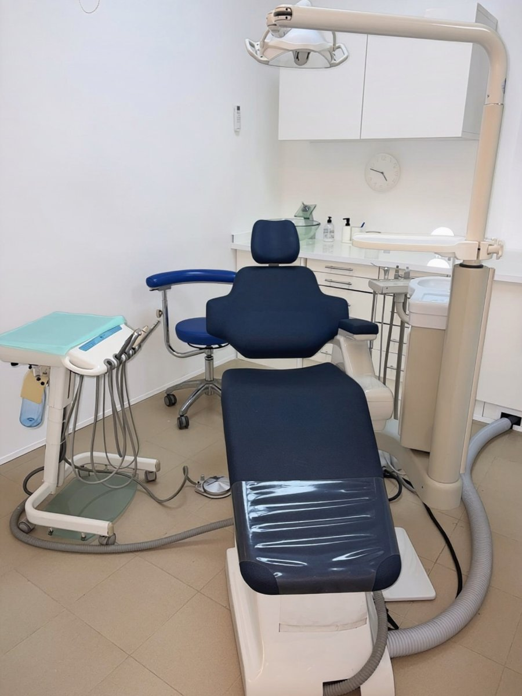

Estudio periodontal
Medimos la profundidad de las encías diente por diente (periodontograma) y valoramos el hueso con radiografías.
Odontología integral · La Orotava
Si te sangran las encías, las notas inflamadas o algún diente se mueve, no lo dejes pasar. Tratamos la gingivitis y la periodontitis para que conserves tus dientes.

Diagnóstico precozpara conservar tus dientes
En qué consiste
Las encías y el hueso son los cimientos de tus dientes. La gingivitis es la inflamación de la encía por acumulación de placa y es reversible con un buen tratamiento. Si no se trata, puede avanzar a periodontitis, que destruye poco a poco el hueso que sujeta los dientes y es una de las principales causas de pérdida dental en adultos.
La periodontitis no duele en sus primeras fases, por eso es importante detectarla a tiempo. Además, está relacionada con otras enfermedades como la diabetes o los problemas cardiovasculares, y el tabaco la agrava y enmascara sus síntomas.
Indicaciones
Ventajas
Frenamos la pérdida de hueso para que mantengas tus dientes naturales.
Sin sangrado ni inflamación, y con menos sensibilidad.
Eliminamos las bacterias que provocan el mal aliento.
Unas encías sanas son imprescindibles antes de colocar implantes.
Paso a paso
Periodontograma completo y radiografías para conocer el estado de encías y hueso.
Raspados y alisados radiculares, con anestesia local, en una o varias sesiones.
A las 6–8 semanas comprobamos cómo han respondido las encías.
Revisiones periódicas cada 3–6 meses para que la enfermedad no vuelva.
¿Tienes dudas sobre tu caso?
En la primera visita te lo explicamos todo, sin compromiso.
Preguntas frecuentes
¿Tienes otra pregunta? Escríbenos o llámanos y te atendemos encantados.
No. El sangrado es la señal más frecuente de inflamación de las encías. Conviene revisarlo cuanto antes, porque en sus primeras fases es fácil de tratar.
La gingivitis sí desaparece con el tratamiento. La periodontitis es una enfermedad crónica que se puede controlar y frenar con el tratamiento adecuado y un buen mantenimiento.
No, porque se realiza con anestesia local. Después puede haber algo de sensibilidad durante unos días.
Sí, pero primero hay que controlar la enfermedad. Unas encías sanas son clave para que los implantes duren muchos años.
Existe una predisposición genética, por eso si tus padres perdieron dientes por las encías es importante revisarte con regularidad.
También te puede interesar
Limpiezas profesionales y revisiones periódicas: la base de una boca sana.
Ver tratamientoReponemos un diente perdido sin tocar los dientes vecinos, con una corona de aspecto natural.
Ver tratamientoSi falta hueso, lo regeneramos para colocar implantes con total garantía y estabilidad.
Ver tratamientoContacto
Av. Mayorazgo de Franchi, 16
Edf. Montymar, Local 1
38300 La Orotava, Santa Cruz de Tenerife
Lunes, martes, miércoles y viernes
9:00 – 17:00
Jueves
11:00 – 19:00